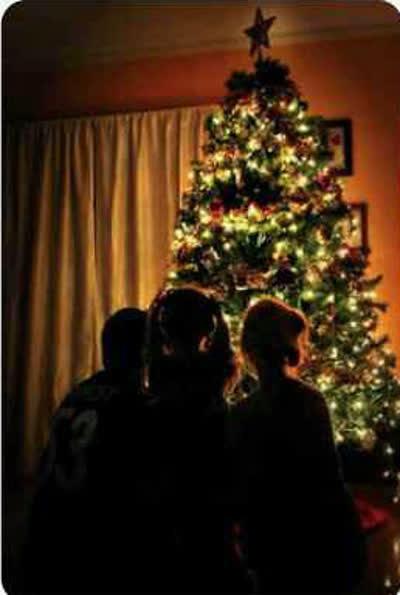
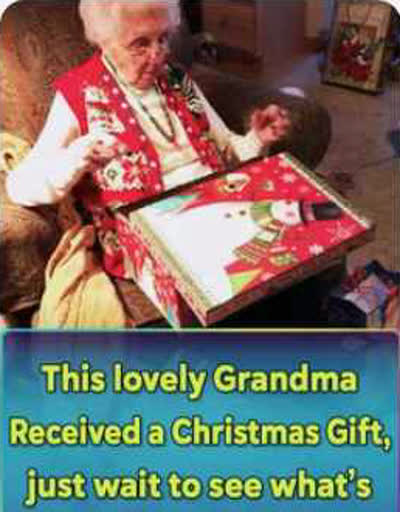
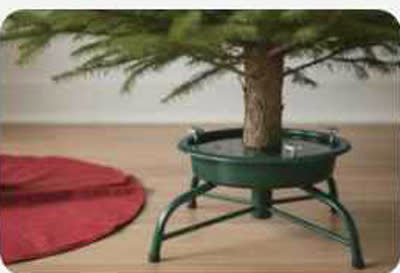
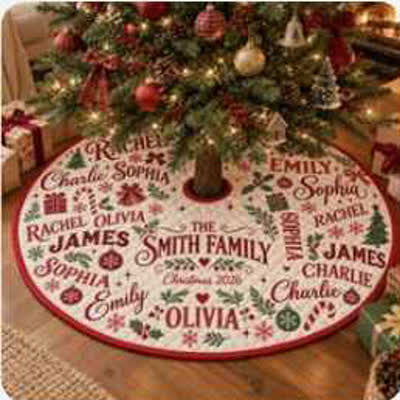

Quảng cáo Giáng sinh 1 · Một ảnh ra 3 video UGC (chân cây thông)
Sản phẩm: chân cây thông in tên cả nhà (pawesomehouse.com, 29,99 USD, 1–10 tên). Ba video UGC là ba lý do mua: gốc cây xấu thành đẹp, cả nhà có tên, món quà cho mẹ. Khoảng 52 giây, khung 16:9, giọng Emma, chạy chuyển đổi.
Cách đọc
Bản A là một hàng, bản B là một hàng, đọc từ trái sang phải theo thứ tự cảnh; hàng nền vàng ngay dưới tên cảnh (lời đọc, chữ, tiếng) dùng chung cho cả hai. Trên điện thoại vuốt ngang để xem hết các cảnh. Anh có thể lấy cảnh 1 của hàng A ghép cảnh 2 của hàng B. Ảnh nhỏ là ảnh tham chiếu lấy trên Pinterest để hình dung bố cục, ánh sáng, cách cầm sản phẩm: chưa phải ảnh của video. Ảnh giao diện (khung xám trắng) là màn hình thật của Promer AI. Tỉ lệ 16:9 (1920×1080) theo anh dặn 02/11: không áp vùng an toàn và ô phụ đề của Shorts 9:16; phụ đề ngang đặt dưới giữa khung, cách mép 5%. Ảnh Pinterest nhỏ phần lớn là ảnh dọc, chỉ để tham chiếu. Bản sửa 02/11: bám ghi chú marketing trong sheet (tệp merchant không giỏi làm video, show 2–3 video dồn dập ở 3 bối cảnh, lấy hình từ shop, nhấn sự đa dạng của Promer, không đi sâu model).(chung A và B)
- Lời: "One photo of this tree skirt. Three UGC ads. Zero filming."
- Chữ: 1 PHOTO → 3 UGC ADS
- Tiếng: riser rồi impact lúc vỡ hoặc lật
- Lời:
- Creator 1: "Our tree looked like this for years."
- Creator 2: "Every name in our house is on it."
- Creator 3: "Best gift I've given my mom."
- Emma: "Three creators. Three reasons to buy."
- Chữ: Different reason. Same tree skirt.
- Tiếng: whoosh mỗi cú cắt, tiếng giấy gói quà ở video 3
- Lời: "Not a video person? Paste your product link. Promer finds the ads already winning, writes the hooks, and you pick the creator."
- Chữ: Link → Winning ads → Hooks → Creator
- Tiếng: click mỗi bước, pop khi hiện avatar
- Lời: "Out of ideas? See which ads are winning in your niche, or clone one for your own product."
- Chữ: Spy · Clone · Launch
- Tiếng: pop, swipe
- Lời: "Make your first test ad today. Plans from nine dollars a month."
- Chữ: promer.ai · From $9/mo
- Tiếng: chime khi hiện logo



- Ảnh sản phẩm của shop nằm giữa khung, vỡ thành 3 dải dọc 640×1080 (ba dải kín khung 16:9).
- Dải 1: gốc cây trơ chân đế.
- Dải 2: cả nhà quanh cây buổi tối.
- Dải 3: bà mở hộp quà.
- Giây 1–2 đã thấy 3 video chạy.
Ảnh đầu: ảnh sản phẩm của shop (tham chiếu). Pinterest christmas tree stand · family christmas tree night · grandma christmas gift reaction

- Mỗi video khoảng 3 giây, mỗi video một lý do mua.
- (1) Gốc cây xấu thành đẹp: máy cúi xuống chân đế sắt, creator nói "Our tree looked like this for years.", trải thảm, vuốt phẳng, máy lùi ra thấy cây hoàn chỉnh.
- (2) Đọc tên cả nhà: mẹ ngồi bệt trên sàn chỉ từng người tuyết "That's me, that's Daniel...", bé chạy vào chỉ tên mình.
- (3) Mở quà: bà mở hộp, đọc thấy tên các cháu, đưa tay lên ngực.
- Tên trên thảm cận cảnh ghép trong AE từ ảnh sản phẩm thật, không để AI vẽ chữ.
Pinterest christmas tree stand (chân đế trần) · family christmas tree night · grandma christmas gift reaction

- UI Promer phủ kín khung 16:9, nền ấm.
- 15–20 dán link chân cây.
- 20–26 Promer đọc quảng cáo đang thắng và gợi ý hook (quà tặng, cả nhà, gốc cây đẹp).
- 26–32 thư viện 5.000 avatar: lọc tuổi để có cả mẹ trẻ lẫn bà (nhấn sự đa dạng).
- 32–35 bấm tạo.
Giao diện thật: UGC Ads, Select avatar (5000 avatars).

- Quảng cáo chân cây cá nhân hoá đang thắng trượt vào từ phải (che tên hãng), rồi biến thành bản của mình với đúng chân cây của mình.
Giao diện thật: Ad Clone, chọn quảng cáo mẫu.
- Logo Promer và nút viền chạy màu (dùng lại kiểu CTA Shorts 01).
Không cần ảnh tham chiếu.

- Bàn làm việc nhìn từ trên xuống: tay đặt ảnh chân cây lên bàn, 3 tờ giấy rơi ra, mỗi tờ lật thành một video.
Pinterest woman unboxing product selfie: góc nhìn từ trên xuống, tay đưa vào khung.



- Cùng 3 lý do, nhưng quay kiểu selfie nói vào camera: mỗi creator cầm mép thảm đưa sát máy cho thấy tên, nói một câu.
- Ba người xếp thành 3 dải dọc kín khung 16:9, sáng lần lượt theo nhịp.
Pinterest tree skirt personalized (thảm in nhiều tên) · ugc creator holding product.

- Cùng 4 nhịp, nhưng UI nằm trên laptop đặt trên bàn, máy đẩy vào dần. Ở nhịp avatar, con trỏ chọn lần lượt 3 người khác độ tuổi.
Giao diện thật: Generate video scripts, Select avatar.

- Một tờ quảng cáo đối thủ được chép thành tờ mới: tờ cũ nằm dưới, tờ mới hiện lên với chân cây của mình.
Pinterest tree skirt personalized. Giao diện thật: Ad Clone, 3 kết quả.
- Giống bản A (CTA cố định theo sheet).
Không cần ảnh tham chiếu.
01_Brand/design-system/assets/product-screens/. Ảnh sản phẩm của shop chỉ để tham chiếu: video phải xoá logo và chữ của shop. Chưa có: key visual, ảnh/video AI, dựng After Effects.